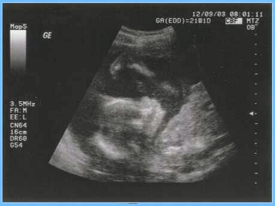

Recovered weblog entry
Just great news
No tricks tonight, just great news.
We finally know what it is. After weeks of waiting, Wife and I had our second ultrasound to determine the gender of our baby. We awoke early, around 6:00am, as our appointment time was at 7:00 and we needed to be there early.
When we arrived, the sun was barely rising over the eastern mountains. There was a definite chill in the air as I led her up to the building. We were both excited, but neither of us wanted to admit that we were nervous, too.
When we walked into the doctor's office, I asked the receptionist if we should proceed directly to the ultrasound or wait here for the doctor.
"You don't have an ultrasound scheduled for today, I'm afraid", she said.
I then informed her that there must have been some mistake, as the doctor told us that he would make sure we found out during the next appointment. She was very stern with me, and told me that there was no possible way that we could have our ultrasound today.
Heartbroken, we took our seats in the lobby and waited for the doctor to call us in. My wife didn't say a word, but the look in her eyes told me exactly how she felt. The poor thing was heartbroken!
Anyway, when we talked to the doctor, he informed us that he would work his magic and make sure we were scheduled in at 8:00am for the ultrasound. Pure excitement!
We waited another hour, watching the Today show on the television in the lobby. It must have done a great job of distracting me, because I didn't feel nervous again until they called my wife's name.
We walked together back into the ultrasound room, holding hands and breaths. I nervously asked the nurse if she thought that we'd be able to know what it was, she reassured us that we should have no problem finding out.
As she touched the wand to my wife's tummy, I glanced at the tiny screen to the side of us. I watched in wonder as this tiny being rolled around inside my wife. "Just get to the good part", I said to myself. I had hardly thought this when I realized I should be enjoying this moment, I should really experience the whole thing, and not just the penultimate moment.
Well, that moment finally came. She told us what it was, and we both looked at each other knowingly. We both knew it from the start, yet we were still so surprised and happy. Basically, any positive and wholesome emotion was felt at that moment in time.
So, just four little months left. We await his arrival with great anticipation.
